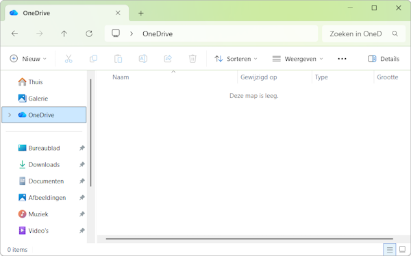

Voorbereidingen#
Mappenstructuur#
Om ervoor te zorgen dat je je bestanden later (wanneer je de poster gaat maken) makkelijk terug kunt vinden, is het belangrijk dat je een goede mappenstructuur aanlegt. Maak in je OneDrive in je Documenten map een map aan met de naam Dommelproject.
Mappenstructuur#

Gebruik de Verkenner om een map aan te maken in je OneDrive#
Bronbestanden downloaden#
Download de volgende Excelbestanden:
Na het downloaden staan deze bestanden waarschijnlijk in je map Downloads. Verplaats ze naar de map Dommelproject die je zojuist hebt aangemaakt.
De Excelbestanden op de juiste plek#